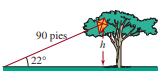
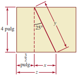

RAZONES TRIGONOMÉTRICAS
ACTIVIDAD DE APRENDIZAJE
Caso práctico
Una cometa queda atorada en las ramas de la copa de un árbol. Si el hilo de 90 pies de la cometa forma un ángulo de 22° con el suelo.

Estimar la altura del árbol, calculando la distancia de la cometa al suelo.
Caso práctico
Un carpintero corta el extremo de una tabla de 4 pulgadas, formando un bisel de 25° con respecto a la vertical, comenzando en un punto a 1 1/2 pulgadas del extremo de la tabla.

Calcular las longitudes del corte diagonal y del lado restante.
Obra publicada con Licencia Creative Commons Reconocimiento Compartir igual 4.0